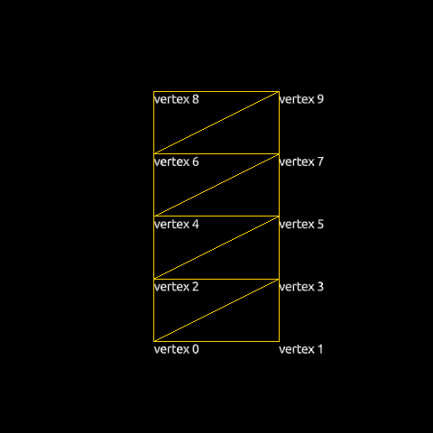
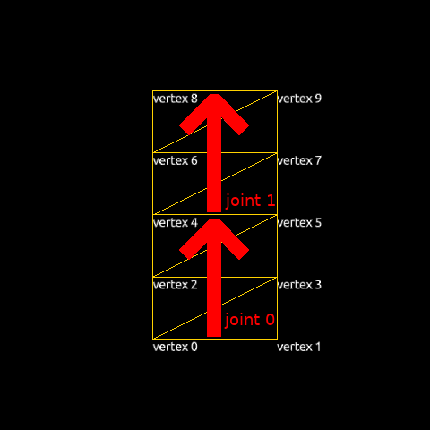
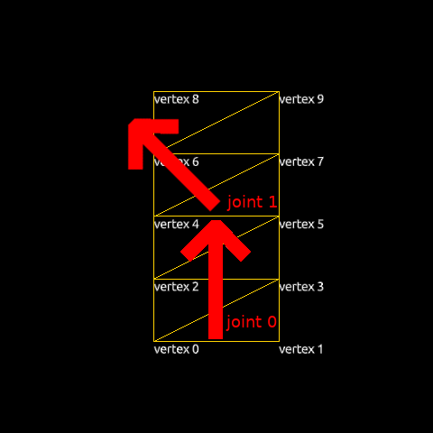
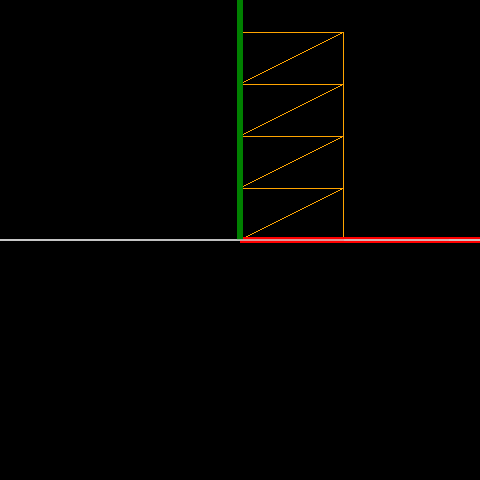
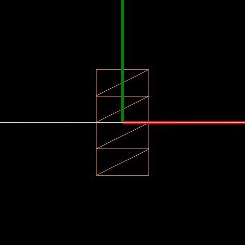

Qt Quick 3D - Simple Skinning Example
Demonstrates how to render a simple skinning animation in Qt Quick 3D.
Generally most skin animations will be designed by modeling tools, and Quick3D also supports glTF formats through the Balsam importer and Qt Design Studio. This example shows how each property is used for the skin animation in Quick3D.
Note: All the data in this example come from gfTF-Tutorial Skins.
Make a skinning geometry.
To use custom geometry data, we will define a geometry having positions, joints, weights, and indexes.
Q_OBJECT QML_NAMED_ELEMENT(SkinGeometry) Q_PROPERTY(QList<QVector3D> positions READ positions WRITE setPositions NOTIFY positionsChanged) Q_PROPERTY(QList<qint32> joints READ joints WRITE setJoints NOTIFY jointsChanged) Q_PROPERTY(QList<float> weights READ weights WRITE setWeights NOTIFY weightsChanged) Q_PROPERTY(QList<quint32> indexes READ indexes WRITE setIndexes NOTIFY indexesChanged)
Each position is a vertex position and each vertex has 4 joints' indexes and corresponding weights.
Set up skinned data in QML
Position data and indexes
We will draw 8 triangles with 10 vertexes. The table below shows the QML code and a visualization of the vertexes.
| QML Code | Visualized |
|---|---|
positions: [ Qt.vector3d(0.0, 0.0, 0.0), // vertex 0 Qt.vector3d(1.0, 0.0, 0.0), // vertex 1 Qt.vector3d(0.0, 0.5, 0.0), // vertex 2 Qt.vector3d(1.0, 0.5, 0.0), // vertex 3 Qt.vector3d(0.0, 1.0, 0.0), // vertex 4 Qt.vector3d(1.0, 1.0, 0.0), // vertex 5 Qt.vector3d(0.0, 1.5, 0.0), // vertex 6 Qt.vector3d(1.0, 1.5, 0.0), // vertex 7 Qt.vector3d(0.0, 2.0, 0.0), // vertex 8 Qt.vector3d(1.0, 2.0, 0.0) // vertex 9 ] indexes: [ 0, 1, 3, // triangle 0 0, 3, 2, // triangle 1 2, 3, 5, // triangle 2 2, 5, 4, // triangle 3 4, 5, 7, // triangle 4 4, 7, 6, // triangle 5 6, 7, 9, // triangle 6 6, 9, 8 // triangle 7 ] |  |
Joints and weights data
Every vertex needs to specify the indexes of the joints that should have an influence on it during the skinning process. For each vertex we store these indexes as 4D vectors (Qt limits the number of joints that may influence a vertex to 4). Our geometry will have just two joint nodes (0 and 1), but since we use 4D vectors we set the remaining two joint indexes and their weights to 0.
joints: [ 0, 1, 0, 0, // vertex 0 0, 1, 0, 0, // vertex 1 0, 1, 0, 0, // vertex 2 0, 1, 0, 0, // vertex 3 0, 1, 0, 0, // vertex 4 0, 1, 0, 0, // vertex 5 0, 1, 0, 0, // vertex 6 0, 1, 0, 0, // vertex 7 0, 1, 0, 0, // vertex 8 0, 1, 0, 0 // vertex 9 ]
Corresponding weight values are as below.
weights: [ 1.00, 0.00, 0.0, 0.0, // vertex 0 1.00, 0.00, 0.0, 0.0, // vertex 1 0.75, 0.25, 0.0, 0.0, // vertex 2 0.75, 0.25, 0.0, 0.0, // vertex 3 0.50, 0.50, 0.0, 0.0, // vertex 4 0.50, 0.50, 0.0, 0.0, // vertex 5 0.25, 0.75, 0.0, 0.0, // vertex 6 0.25, 0.75, 0.0, 0.0, // vertex 7 0.00, 1.00, 0.0, 0.0, // vertex 8 0.00, 1.00, 0.0, 0.0 // vertex 9 ]
Skeleton and Joint hierarchy
For skinning, we add a skeleton property to the Model:
skeleton: qmlskeleton Skeleton { id: qmlskeleton Joint { id: joint0 index: 0 skeletonRoot: qmlskeleton Joint { id: joint1 index: 1 skeletonRoot: qmlskeleton eulerRotation.z: 45 } } }
The two Joints are connected in a Skeleton. We will rotate joint1 45 degrees around the z-axis. The images below show how the joints are placed in the geometry and how the initial skeleton is oriented.
| Joints in the geometry | Initial skeleton |
|---|---|
 |  |
Placing models using inverseBindPoses
Once a model has a valid skeleton, it is necessary to define the initial pose of the skeleton. This defines the baseline for the skeletal animation: moving a joint from its initial position causes the model's vertexes to move according to the joints and weights tables. The geometry of each node is specified in a peculiar way: Model.inverseBindPoses is set to the inverse of the matrix that would transform the joint to its initial position. In order to move it to the center, we will simply set the same transform for both joints: a matrix that translates -0.5 along the x-axis and -1.0 along the y-axis.
| QML code | Initial position | Result |
|---|---|---|
inverseBindPoses: [ Qt.matrix4x4(1, 0, 0, -0.5, 0, 1, 0, -1, 0, 0, 1, 0, 0, 0, 0, 1), Qt.matrix4x4(1, 0, 0, -0.5, 0, 1, 0, -1, 0, 0, 1, 0, 0, 0, 0, 1) ] |  |  |
Animate with Joint nodes
Now that we have prepared a skinned object, we can animate it by changing the Joints' properties, specifically eulerRotation.
Timeline { id: timeline0 startFrame: 0 endFrame: 1000 currentFrame: 0 enabled: true animations: [ TimelineAnimation { duration: 5000 from: 0 to: 1000 running: true } ] KeyframeGroup { target: joint1 property: "eulerRotation.z" Keyframe { frame: 0 value: 0 } Keyframe { frame: 250 value: 90 } Keyframe { frame: 750 value: -90 } Keyframe { frame: 1000 value: 0 } } }
A more complete approach to skinning
Skeleton is a resource but it's hierarchy and position is used for the Model's transformation.
Instead of a Skeleton node, we can use the resource type Skin. Since the Skin type is not a spatial node in the scene, its position will not affect the model. A minimal working Skin node will normally consist of a node list, joints and an optional inverse bind matrices, inverseBindPoses.
Using the Skin item the previous example can be written like this:
skin: Skin { id: skin0 joints: [ joint0, joint1 ] inverseBindPoses: [ Qt.matrix4x4(1, 0, 0, -0.5, 0, 1, 0, -1, 0, 0, 1, 0, 0, 0, 0, 1), Qt.matrix4x4(1, 0, 0, -0.5, 0, 1, 0, -1, 0, 0, 1, 0, 0, 0, 0, 1) ] }
From the code snippet we can see that the Skin only has two lists, a joints and an inverseBindPoses, which differs from the Skeleton approach, as it does not have any hierarchy and just uses existing node's hierarchy.
Node { id: joint0 Node { id: joint1 eulerRotation.z: 45 } }
Files:
- skinning/CMakeLists.txt
- skinning/Example/SimpleSkinning.qml
- skinning/Example/SimpleSkinningNew.qml
- skinning/Example/main.qml
- skinning/Example/qmldir
- skinning/Example/skinning_qml_module_dir_map.qrc
- skinning/SimpleSkinning.qml
- skinning/SimpleSkinningNew.qml
- skinning/main.cpp
- skinning/main.qml
- skinning/qml.qrc
- skinning/skingeometry.cpp
- skinning/skingeometry.h
- skinning/skinning.pro